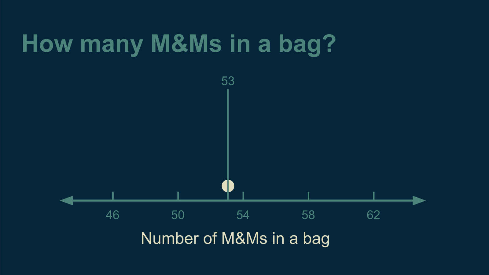
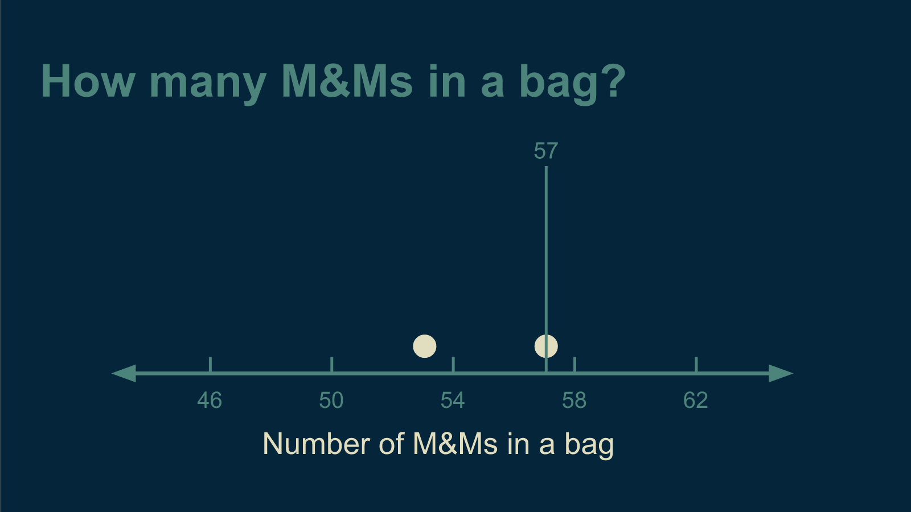
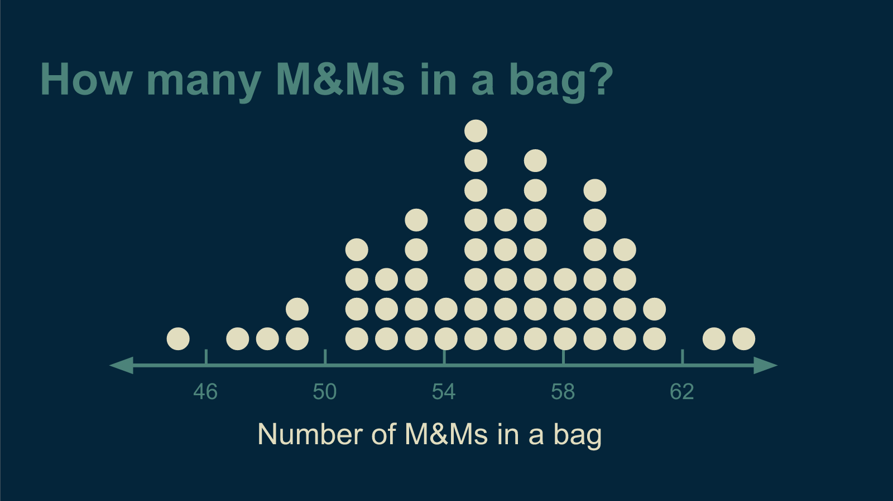
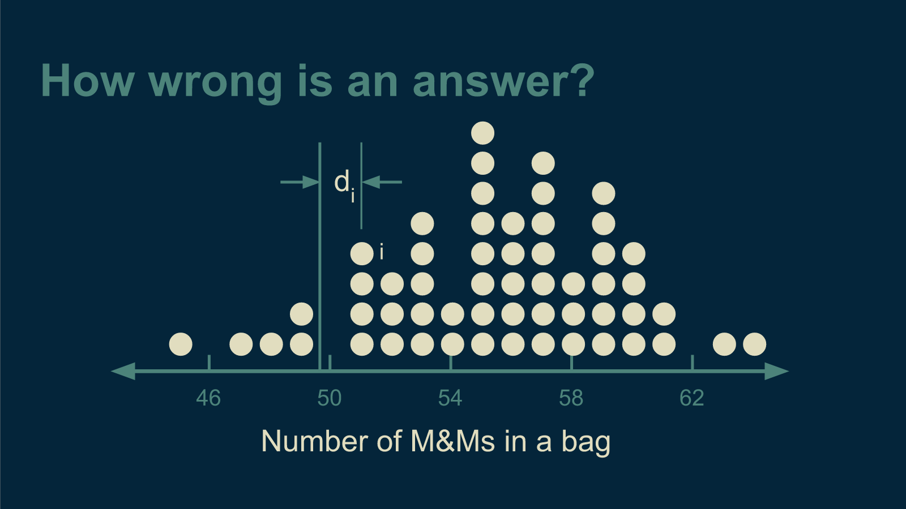
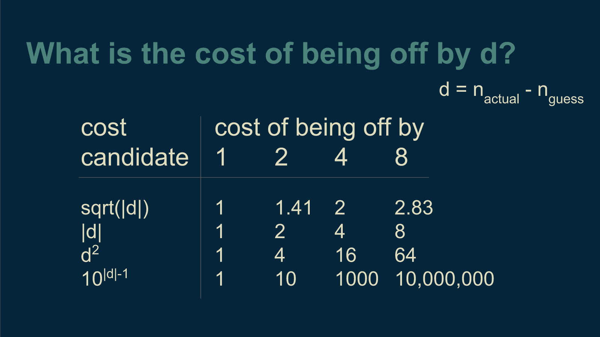
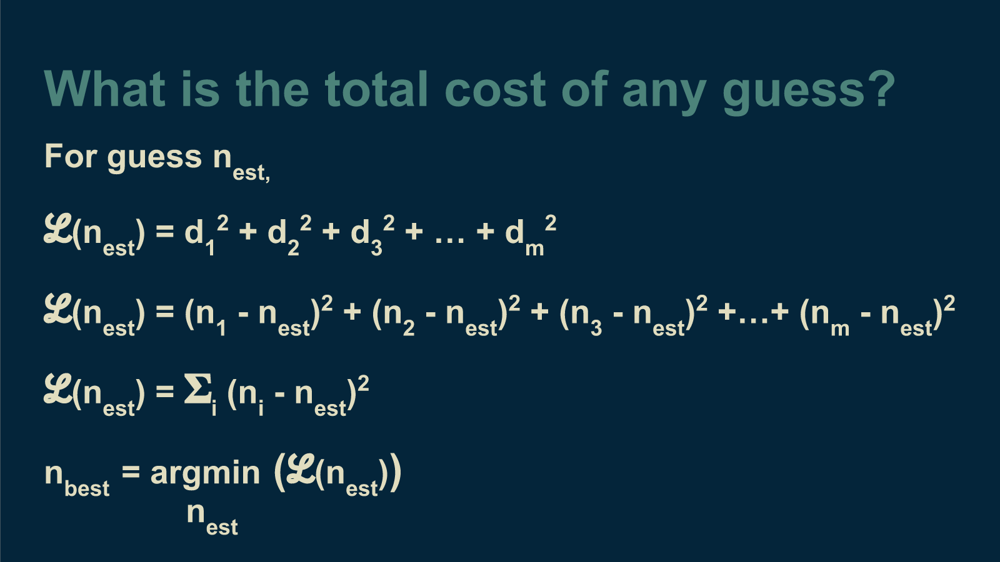
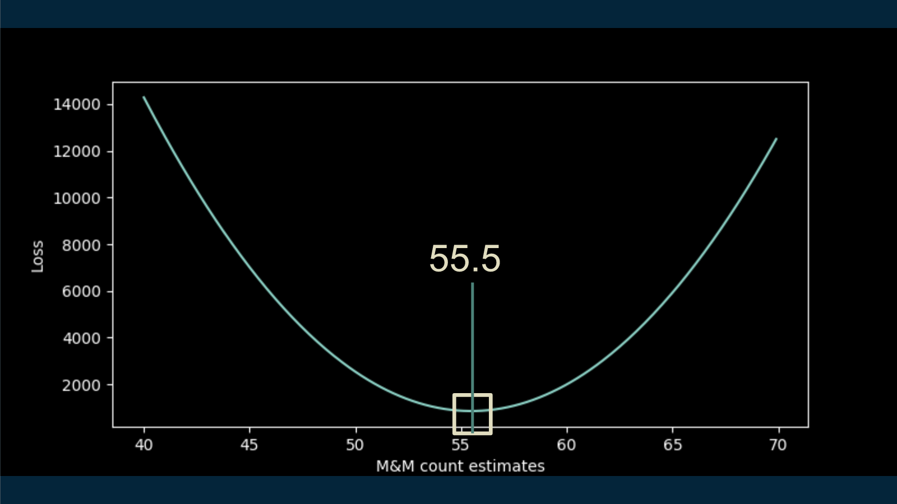
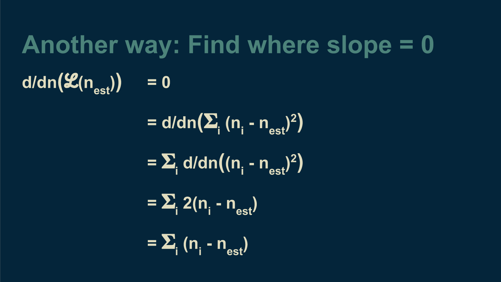
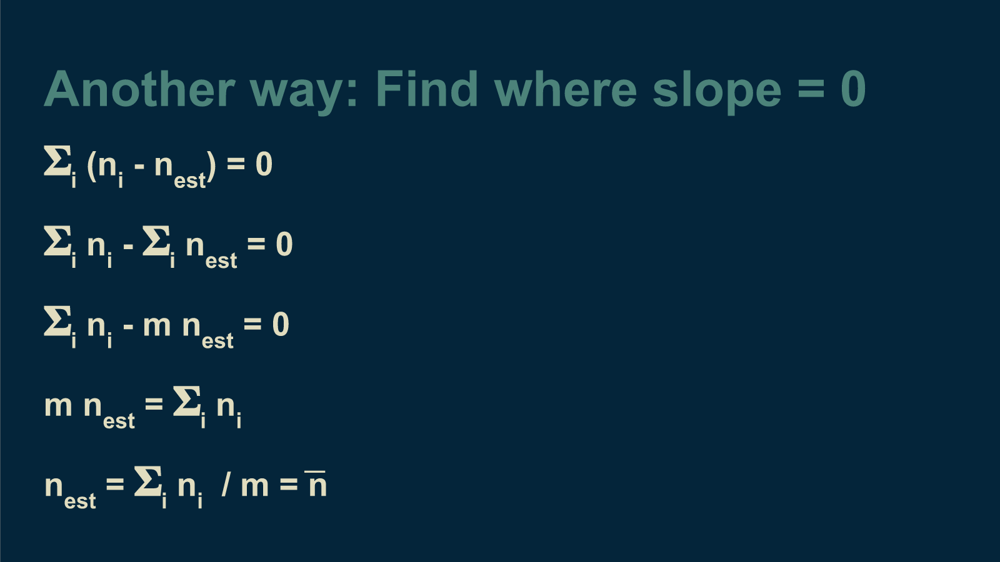

- Part 1: Optimization methods [post]
- Part 2: Optimizing a central tendency model [post] [code]
- Part 3: Optimizing a linear model [post] [code]
- Part 4: Optimizing complex models [post] [code]
- [slides]
One way to think about machine learning is as a way to convert raw data to a simplified, cartoon-like representation, a model, and to use that representation to make predictions and estimates. Whenever we are engaged in the first part, fitting a model to some data, there is some optimization going on. It is built into the foundation. It comes to the foreground particularly when training deep neural networks. It’s worth taking a look at couple of examples.
Counting M&Ms
We'll start with a model that is so simple, we usually don't think of it as a model. We'll try to answer the question "How many M&Ms come in a bag?"
Finding an answer to this is easy. I bought a bag of M&Ms, counted them, and ate them. The answer was 53 M&Ms in a bag.
Then I bought a second bag. It had 57 M&Ms in it. Now I'm in a tight spot. If I answer 53, I'm only right half the time. If I answer 57, I'm still only right half the time.
If I answer 55, right in the middle, I'm not right at all. There is no longer a right answer. It's like the situation described by the saying, "A person with a watch always knows what time it is. A person with two watches is never sure."
Counting more bags of M&Ms didn't help. The more I ate, the more I saw that there was no right answer. It became clear that being right was impossible. I changed my goal to being less wrong. "What is the least wrong estimate I can make about how many M&Ms come in a bag?"
This is a question I have a shot at answering. First, I had to make it very specific. I had to translate it to math. For a given guess and a given bag of M&Ms, the difference between them is d. If I number each bag of M&Ms then the difference between my guess and the count of bag 1 is d_1, the difference between my guess and the count of bag 2 is d_2, the difference between my guess and the count of bag i is d_i. d is often called the deviation.
The next thing I need to decide is, if I'm off by a certain deviation, how much do I care? What is the cost to me? There are lots of valid ways to answer this question, and they all result in different answers. The most common is to take the deviation and square it. If a bag is twice as far from the estimate as another, it incurs 4 times the cost. This squared cost function cares more about the points that are way off than the ones that are close to correct.
Another common cost function is the absolute value of the deviation. That way, if a bag is twice as far away from the estimate, it incurs just twice the cost. For some problems this cost function makes the most sense.
There are lots of other options. For instance, the square root of the deviation or 10 raised to the power of the absolute value of the deviation could also work. In all these cases, the cost goes up as the estimate gets further away from the actual count in the bag.
For our purposes, we'll start with the squared deviation as our cost function. Calculating the total cost is straightforward. Another name for cost is loss, which comes with a cool curly L symbol, so we'll switch to that.
The total loss for a given estimate can be calculated by adding up the cost associated with each bag. This is the square of the distance between the estimate and the number of M&Ms in each bag. In this form we can calculate it.
Exhaustive search
With a little python code, we can run an exhaustive search on this problem and calculate the loss function for a wide range of estimates. Then all we have to do is pick off the M&M count that corresponds to the lowest value on the loss curve, the least wrong option. In this case, about 55 and a half M&Ms.
As you may or may not find interesting, there is another way to get at this estimate. Because this model is so simple, we can work out the math and find an analytic solution. There's going to be some lightweight calculus, so if that makes you uncomfortable, feel free to skip it.
Analytic solution
We are lucky to have a nice equation for the loss function. We know we are looking for the lowest point, and that this is the only place where the curve is flat, where it has a slope of zero. We can use this to solve for the estimate of n at this lowest point.
We find the slope of the loss function with respect to estimated number of M&Ms by taking its derivative, and set it equal to zero. We then just have to find the place where this is true, and that will show us our best estimate of n.
We take advantage of the fact that the derivative of a sum is the sum of the derivatives of all its parts. Then we can take the derivative of each part. The exponent 2 comes down in front. Because this whole expression is already equal to zero, we can divide both sides by 2. Then what's left is still equal to zero.
We can break out the sum into its pieces. We have a total of m bags of M&Ms. If we add up n_est m times, we end up with m times n_est. Then we can subtract this term from both sides and move it to the other side of the equals sign. And finally we can divide by m. What we are left with is, magically, the sum of all the data values, divided by the total number of data points, that is, the average of our counts. This unexpectedly slick result at the end of such a long path is one of the reasons optimization is so popular.
OK, calculus is over. Back to the modeling discussion.
A one-parameter model
Although it may not look like it, this is a model. It's a model of central tendency. It has all the hallmarks of a model. It is a simplified representation of our data. Instead of having to remember every single bag of M&Ms we counted, we created a single, imaginary, ideal, Platonic, typical, representative bag of M&Ms. It is like a cartoon in that it resembles the originals, but is far less complex. This is exactly what a model does.
It also allows us to make predictions. If someone asks us how many M&Ms are in the bag they are about to open, we can answer with confidence "55.48!" We know that we are not correct. It's rare to find .48 of an M&M. But we know that our answer is less wrong than any other answer we could give.
Although it was simple, this was a complete example of optimization for machine learning. Our model (central tendency) had a single parameter (estimated number of M&Ms) that was adjusted to minimize a loss function. Most machine learning models have more parameters than this (many-layered neural networks can have millions), but the underlying process is the same.
The number of all possible combinations of parameter values a model can have is called its parameter space. Exhaustive search requires visiting and evaluating every point in a model's parameter space—trying out every possible combination of parameter values. Because the central tendency model's parameter space was so small, we were able to get away with that, but it's often not the case.
It's also worth noting that the beautiful shortcut we found (using the mean of the data points to find the optimal estimate) via the mathematical long-cut (the analytical derivation) is special. We can't expect to do such things or find such nice results most of the time. Being able to do that depends both on the simplicity of the model and on the exact choice of our loss function. For instance, if we had chosen absolute-deviation-loss, rather than squared-deviation-loss, the mean is no longer the shortcut to get the best answer. In that case, it just so happens that the median is the right shortcut. But if we had chosen square-root-absolute-deviation loss I have no idea whether there would be be any viable shortcut or what it would be. Most of the time, there will be no clean analytical solution and no shortcut for calculating optimal parameter values. We will have to find them using gradient descent or some slower-but-tougher method.
This example showed how optimization works single parameter machine learning model. Now let's move on to part 3 where we take on a linear model.